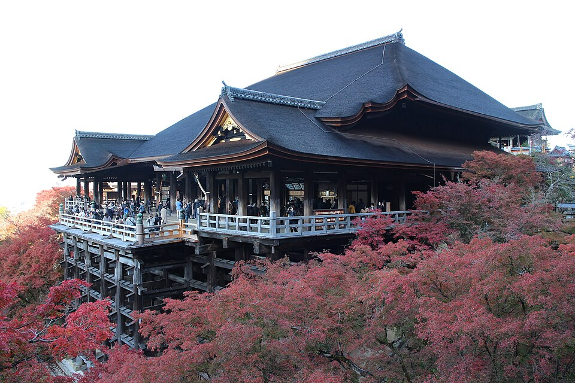
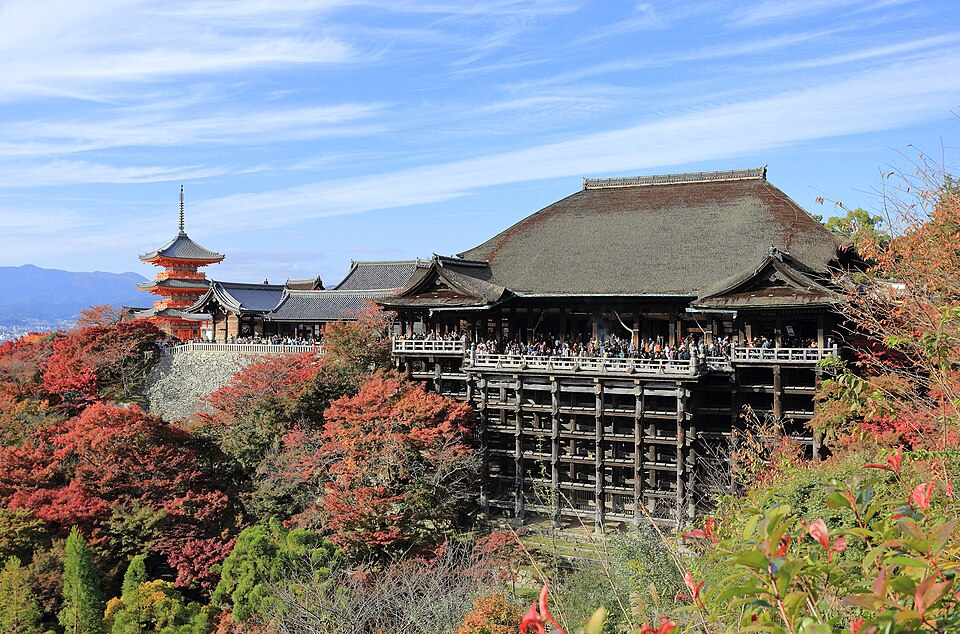

Kiyomizu-dera
Higashiyama · ~15 мин автобус 100/206 + 10-15 мин пешком в гору от отеля







Храм 778 года на склоне холма, объект ЮНЕСКО. Главный зал стоит на деревянной террасе высотой 13 м, собранной без единого гвоздя, с видом на город и клёны внизу. Название значит «храм чистой воды» - по источнику Otowa у подножия, его три струи дают здоровье, учёбу и любовь (нужно выбрать одну).
6:00-18:00, ~¥500 (наличные надёжнее карты). Ночная подсветка 21-30 ноября 2026 - отдельный вход, на твои даты не попадает. Склон людный в выходные, но дорога наверх через торговую улицу - часть впечатления.
Рядом
Фото: Wikimedia Commons (лицензии под каждым фото). Часы и цены проверены 20.10.2026 по путеводителям и официальным сайтам - перепроверь перед визитом, сезонно меняются. ← ко всем местам